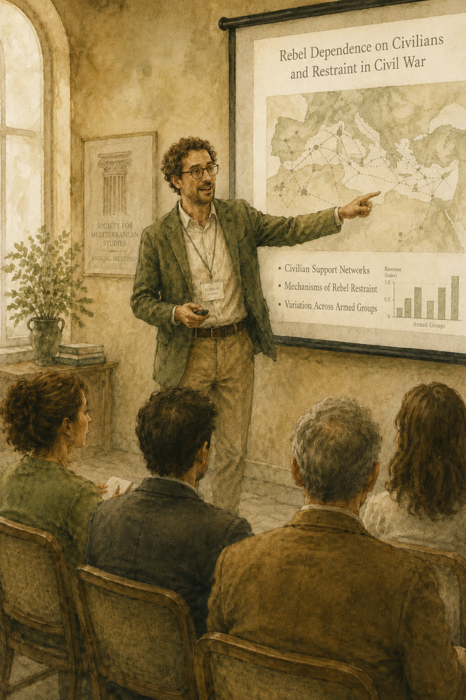

Learning Outcomes
By the end of this seminar, you should be able to:
- 1Move from a general theoretical claim to mechanism-level statements that name actors and their actions or beliefs, and judge observable implications by whether they could confirm or disconfirm specific descriptive or causal inferences.
- 2Treat fieldwork choices — whom you interview, who is doing the interviewing, and what your analysis silently leaves out — as decisions that shape what evidence is even available and what blind spots the work will carry.
- 3Recognise the ethical dimension of choosing data sources, asking interview questions, and sharing findings with outside actors who have their own interests in your findings.
Enter the names of group members (up to five). Leave blank if fewer.
Your study
You are conducting a qualitative single-case study on the relationship between a rebel group's dependence on civilian support and the degree to which the rebels exercise restraint in their interactions with civilians.
The theory: when rebel groups are highly dependent on civilian support, they are more likely to exhibit restraint. Two mechanisms are proposed:
- The cost of abuse rises. Dependence means civilians provide essential resources, shelter, intelligence, and legitimacy; abusing them undermines all of these. Rebels are therefore incentivised to behave well.
- Information improves. Dependence gives rebels closer ties to civilians, and therefore better information about who is loyal, neutral, or hostile. With better information, the need for indiscriminate violence decreases.
You have already chosen a case. Your job in this seminar is to develop the observable implications of this theory — the things you would actually look for in the field or in the archives — and to consider how to find evidence of those indicators.
Before you can develop indicators for rebel dependence on civilian support, you need a theoretical definition. Operational measures come later — for now, focus on what the concept means.
Which of the following is the most defensible theoretical definition?
The diagram below sketches the theory. The independent and dependent variable are fixed, but the four mechanism boxes need some polishing. A good qualitative mechanism statement names an actor (expressed as a noun) and a change in behavior or belief (expressed using a verb) — not just a generic causal step. Improve the causal diagram below by adding actors and expected changes.
Click any dashed box to edit it directly. The diagram updates as you type.
The shortlist
Below are eight candidate indicators of rebel dependence on civilian support. Some are appropriate; others are flawed in subtle ways. Select two indicators that you would actually use. The system will tell you whether your selections are defensible — but only once you've picked two.
Certainty = how necessary the evidence is for the descriptive inference: if the rebels really are dependent on civilians, we should certainly observe this indicator — so failing to find it disconfirms the inference (disconfirmatory power). Uniqueness = how unique the evidence is to dependence: no rival description would predict it — so finding it confirms the inference (confirmatory power).
Focus on the indicator: "Share of rebel food and supplies that are supplied by local civilians rather than external sponsors or looting."
You have time for exactly four groups of interview respondents. Build your pool by clicking respondent cards on the left to move them to your pool on the right; click again to remove. Different respondent types give you different parts of the picture — some are well-placed, some are unreliable, and a few would be ethically problematic to interview about this question.
Available respondents
Your interview pool
You have just thought hard about what indicators of the independent variable look like. Now develop two indicators for your dependent variable — rebel restraint vis-à-vis civilians.
For each indicator, briefly state what you would look for as evidence of restraint. Try to make the indicators as certain and unique as possible — you do not need to specify where the evidence would come from at this stage.
Which mechanism does your group want to focus on?
You are about to collect data produced in a particular kind of researcher–informant encounter. Before you do, decide who the researcher actually is. There is no neutral position: every researcher brings doors that open and doors that close. Positionality always matters, the question is how.
The project has the budget for two researchers. Five candidates are described below. Pick the two you would send.
Briefly note what the combination opens up and what it closes off — for example, who is likely to talk freely, who is likely to withhold, and how the team will be read before anyone speaks.
You have spent two weeks systematically scanning the rebel group's internal archives — orders, training materials, post-action reports, disciplinary files — for any document instructing fighters on how to engage with civilians. You find none.
Does this absence support the inference that the rebels were not dependent on civilians? There is no single right answer — discuss, pick a position, and motivate it.

You presented your findings at an international conference last week. The discussion was lively — until, near the end, a gender scholar in the audience raised her hand and asked whether you had really thought about the gendered dynamics of any of this. Your first instinct was annoyance: another scholar pulling her own hobbyhorse into a paper that wasn't about that. You answered briefly and moved on.
Sitting with the question on the flight home, you realised the critique cut more deeply than you had let yourself see in the room. It is one thing to insist your paper is about something else; it is another to ask honestly whether your analysis has gendered blind spots you simply did not see.
Below are eight places where gender could have mattered in this study. Honestly flag the ones your group did not adequately account for in your analysis — then mark the single omission you believe could have the biggest impact on your findings.
Download your group's answers
A new window will open with a printable version. Use your browser's print dialog to save as PDF.